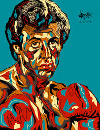
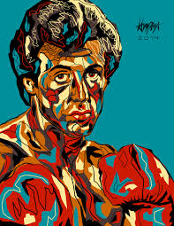
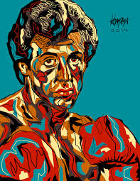
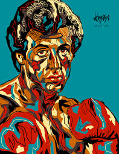
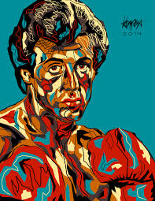

.jpg) 



La cultura pop es el conjunto de manifestaciones culturales y movimientos artísticos contemporáneos consumidas por el público en general. Desde la música hasta la radio, televisión, arte, literatura, danza, cine y moda, entre otros. Este nuevo concepto popular surge a lo largo de la segunda mitad del siglo XX como oposición a la cultura oficial o elitista que estaba atribuida a las clases sociales más altas. Hoy en día, la cultura pop actual está estrechamente vinculada con los elementos locales, valores, creencias, costumbres y tradiciones que hacen única la identidad de una nación. Como su propio nombre ya nos indica, la cultura popular está destinada a ser consumida por las clases más populares, por lo que surge y se genera desde los sectores más desfavorecidos de la sociedad en general. Esta cultura alternativa suele ser fomentada, en su mayoría, por los más jóvenes en oposición a la cultura oficial. Sin embargo, el aumento de su notoriedad es determinante para que se conviertan en nuevos productos consumidos por la cultura de masas. Los ejemplos más representativos de la cultura popular suelen encontrarse en la música, el baile y el ámbito literario. Entre todos ellos podemos destacar el origen de la novela negra, la aparición del rap y el reggae o la llegada del Kpop a la danza.
